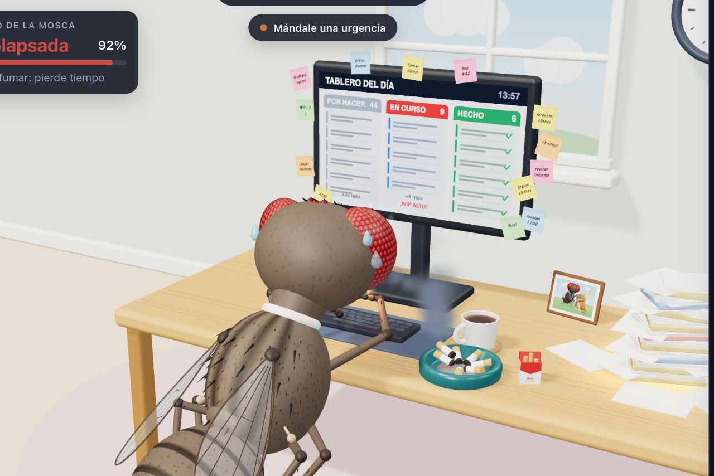

Antes de empezar
Una lista corta y el juego en tres pasos
- El día anterior, lee esta guía y juega en tu computador los dos días que vas a mostrar, uno con 9 tareas a la vez y otro con 2.
- Lleva el juego abierto en mosca.deliverycraft.ai/jugar/, un proyector o una pantalla grande, la presentación en la lámina 1, la hoja del equipo impresa (página 4, una por equipo) y un reloj a la vista.
- Antes de que llegue la gente, juega un día de prueba para ver que todo se vea bien y bórralo con “Borrar historial”, bajo “Días jugados”. Al recargar la página, el juego queda en las 09:00.
- Si el equipo tiene tablero, tenlo a la vista, en la pared o en una pestaña. En la práctica cuentan ahí.
El juego en vivo, en tres pasos



Muéstralo a velocidad normal: un día dura un minuto y la sala alcanza a ver cómo se estresa la mosca. En Exhibición no hay tarjeta de inicio y el día parte con Espacio. En la vista normal y en el celular parte con el botón “Empezar el día” de la tarjeta que aparece al entrar. Para volver a la vista normal está el botón “Volver a la oficina”, arriba a la derecha, o la tecla E.
Si un día sale raro. Cada día del juego es distinto. Si con 9 terminó más que con 2, dilo tal cual, porque un día no prueba nada y la lámina 6 tiene el promedio de 200 días. Si falla el internet, usa las fotos de la lámina 4 y cuenta el día con tus palabras.
Deja de empezar, empieza a terminar · Guía rápida del facilitador